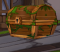
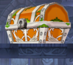

All characters will have access to the Profession System after they reach level 40. Afterwards, the Professions Tab will be accessible in your menu and you may choose your profession. Professions are jobs that characters may obtain, giving them various new features to assist them. Currently, there are only 3 professions available, which are Treasure Hunter, Blacksmith, and Alchemist. Each character can only access one profession at a time. Professions are also ranked by levels, with a maximum level of 10.
As a Treasure Hunter, you may obtain additional items from the boxes and encounter Treasure Chests in dungeons. In order to obtain EXP and level this profession, you must break Treasure Chests and other containers that you will find in dungeons. When you destroy these Treasure Chests, you will be able to obtain special items, such as Ancient Coins, Mithril materials, Elixirs, or a Golden Accessory Cube.
In order to get this Cube, your Treasure Hunter profession must be at least Level 2. If you are a lucky recipient of a Golden Accessory Cube, you can obtain one of five different accessories from the Golden Days Set. The accessory that you will obtain will be sealed and needs to be identified with stats. These accessories can also be upgraded at any Accessory Merchant in towns using Ancient Silver Coins, Ancient Gold Coins, and Ancient Diamonds.
|  |  |
The Mysterious El Sphere is a device that can only be accessed by Treasure Hunters. Players with this profession are able to consume one Ancient Silver Coin, Ancient Gold Coin, or Ancient Diamond to obtain one random item. Each consumption will cost 100,000 ED, regardless of the material consumed. Diamonds have the highest chance of obtaining rare items while Silver Coins have the lowest.
As an Alchemist, you will receive the ability to craft exclusive items and use Advanced Magical Stone Enhancement. Alchemists can obtain EXP through these two features.
Unlike a normal Magic Stone enhancement, Alchemists can perform an advanced enhancement that will give a small chance to obtain high socket stats, at the cost of Elixir items. This small chance will increase as you raise your Alchemist Profession Level.
The Mysterious El Flask is a device that can only be accessed by Alchemists. Players with this profession can consume five items to craft a random item. Any resellable item can be used as a consumable material for the El Flask, including equipment, accessories, and Special items. The chances of receiving useful items will increase as the total resale price of the consumed items increases.
Each use of the Flask will require 100 ED, 1,000 ED, 10,000 ED, 20,000 ED, or no ED cost. The ED cost is dependent on the total resale price of the consumed items.
As a Blacksmith, you will obtain the ability to enhance equipment, similar to the Blacksmith NPCs in town. You will also receive new features, such as Advanced Enhancement, Advanced Dismantle, and the El Anvil. In order for Blacksmiths to obtain EXP, they must perform several Advanced Enhancement, Advanced Dismantle and use the El Anvil. These functions will require the use of a Mithril item for each enhancement or dismantle and a small ED cost. The type of Mithril item needed is dependent on the enhancement level of the equipment. However, using the El Anvil will not require any Mithril items.
Advanced Enhancement is an improved version of the NPCs' enhancement function on equipment. It will give your equipment a chance to raise its enhancement level by multiple levels, at a maximum of 3 additional levels. This feature can only enhance equipment until +10, meaning this skill will never enhance an equipment to +11. The chance of achieving this will increase when you have a high Blacksmith Profession Level.
Advanced Dismantle is an improved version of every character's Dismantle function, where you can get special items, in addition to the normal materials obtained from the dismantled equipment. This will include a chance of obtaining a Magic Amulet (Between level 5-12), El Shards, and Magic Stones. Your reward will be proportional to the enhancement level of your dismantled equipment and your current Blacksmith Profession Level.
The El Anvil is a feature that allows Blacksmith characters to create a random piece of equipment. Each use will consume one durability and 10,000 ED. After using the Anvil, the resulting equipment that you will obtain will be randomized in terms of rarity, enhancement level, level requirement, and type of equipment. The max durability of the Anvil increases by one with each Blacksmith Profession Level. One durability is automatically restored every hour (even if you log out). After every 10th use of the Anvil, you can use the Anvil once without consuming durability and will have a high chance of obtaining one [Cobo] El's Hammer (7 Days) or one guaranteed Unique grade equipment.